Draw a path that moves horizontally and vertically and passes through each white square exactly once, so that at each stage the path goes as far as possible, only changing direction when it hits the edge of the grid, a black square, or another square already visited by the path. The pink squares must be visited twice, once horizontally and once vertically. The path does not start, end, or change direction in the pink squares.
| 1. 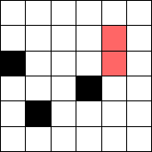 | 2. 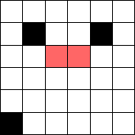 | 3. 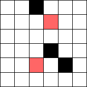 | 4. 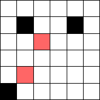 |
| 5. 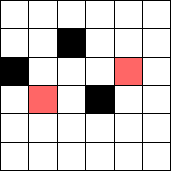 | 6. 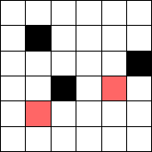 | 7. 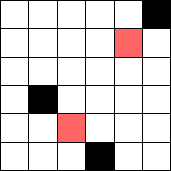 | 8. 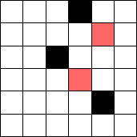 |
| 9. 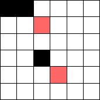 | 10. 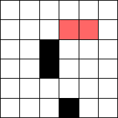 | 11. 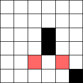 | 12. 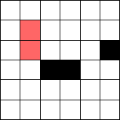 |
| 13. 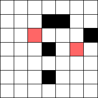 | 14. 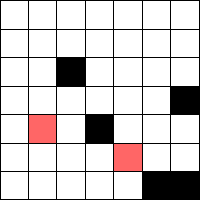 | 15. 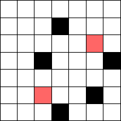 |